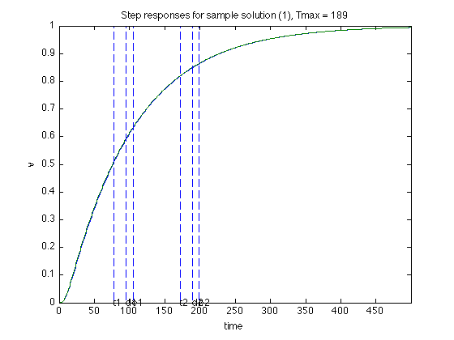
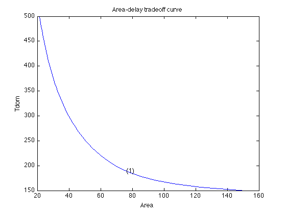

Combined sizing of drivers, repeaters, and wire
n = 21;
m = n-1;
g = 1.0;
c0 = 1.0;
c = 3.0;
alpha = 10;
beta = 0.5;
C = 50;
L = 10.0;
wmax = 2.0;
dmax = 100.0;
CC = zeros(n,n,2,2*m+3);
GG = zeros(n,n,2,2*m+3);
CC(n,n,1,1 ) = c0;
CC(n,n,1,2*m+3) = c;
CC(n,n,2,1) = C;
GG(1,1,1,2*m+2) = g;
GG(1,1,2,2*m+3) = g;
for i = 1 : n-1,
CC(i:i+1,i:i+1,1, i+1) = beta * [1, 0; 0,1];
CC(i:i+1,i:i+1,2,m+i+1) = beta * [1, 0; 0,1];
GG(i:i+1,i:i+1,1, i+1) = alpha * [1,-1;-1,1];
GG(i:i+1,i:i+1,2,m+i+1) = alpha * [1,-1;-1,1];
end
CC = reshape( CC, n*n*2, 2*m+3 );
GG = reshape( GG, n*n*2, 2*m+3 );
npts = 50;
delays = linspace( 150, 500, npts );
xdelays = 189;
xnpts = length( xdelays );
areas = zeros( 1, npts );
xareas = zeros( 1, xnpts );
for i = 1 : npts + xnpts,
if i > npts,
xi = i - npts;
delay = xdelays(xi);
disp( sprintf( 'Particular solution %d of %d (Tmax = %g)', xi, xnpts, delay ) );
else,
delay = delays(i);
disp( sprintf( 'Point %d of %d on the tradeoff curve (Tmax = %g)', i, npts, delay ) );
end
cvx_begin sdp quiet
variables w(m,2) d(1,2)
variable G(n,n,2) symmetric
variable C(n,n,2) symmetric
minimize( L * sum(d) + sum(w(:)) );
G == reshape( GG * [ 1 ; w(:) ; d(:) ], n, n, 2 );
C == reshape( CC * [ 1 ; w(:) ; d(:) ], n, n, 2 );
(delay/2) * G - C >= 0;
w(:) >= 0;
w(:) <= wmax;
d(:) >= 0;
cvx_end
if i <= npts,
areas(i) = cvx_optval;
else,
xareas(xi) = cvx_optval;
figure(2*xi);
os = 3;
m2 = 2 * m;
ss = max( L * max( d ) / os, max( w(:) ) );
x = reshape( [ 1 : m ; 1 : m ], 1, m2 );
y = 0.5 * [ - w(x,:) ; w(x(end:-1:1),:) ; + w(1,:) ];
yd = ( 0.5 * L / os ) * [ -d ; -d ; +d ; +d ; -d ];
x = reshape( [ 0 : m - 1 ; 1 : m ], m2, 1 );
x = [ x ; x(end:-1:1,:) ; 0 ];
xd = [ 0 ; os ; os ; 0 ; 0 ];
x = x + os + 0.5;
xd = [ xd, xd + os + m + 1 ];
x = [ x, x + os + m + 1 ];
fill( x, y, 0.9 * ones(size(y)), xd, yd, 0.9 * ones(size(yd)) );
hold on
plot( x, y, '-', xd, yd, '-' );
axis( [-0.5, 2*m+2*os+2, -0.5*ss-0.1,0.5*ss+0.1 ] );
set( gca, 'XTick', [x(1,1),x(1,1)+m,x(1,2),x(1,2)+m] );
set( gca, 'XTicklabel', {'0',num2str(m),'0',num2str(m)} );
colormap(gray);
caxis([-1,1])
title(sprintf('Sample solution (%d), Tmax = %g', xi, delay ));
figure(2*xi+1);
T = linspace(0,1000,1000);
tdom = []; telm = []; tthresh = []; Y = {};
for k = 1 : 2,
A = -inv(C(:,:,k))*G(:,:,k);
B = -A* ones(n,1);
tdom(k) = max(eig(inv(G(:,:,k))*C(:,:,k)));
telm(k) = max(sum((inv(G(:,:,k))*C(:,:,k))'));
Y{k} = simple_step(A,B,T(2),length(T));
Y{k} = Y{k}(n,:);
tthresh(k) = min(find(Y{k}>=0.5));
end
plot( T, Y{1}, '-', T, Y{2}, '-' );
axis([0 T(500) 0 1]);
xlabel('time');
ylabel('v');
hold on;
text(tdom(1),0,'d1');
text(telm(2),0,'e1');
text(tthresh(1),0,'t1');
text(tdom(1)+tdom(2),0,'d2');
text(tdom(1)+telm(2),0,'e2');
text(tdom(1)+tthresh(2),0,'t2');
plot(tdom(1)*[1;1],[0;1],'--');
plot(telm(1)*[1;1],[0;1],'--');
plot(tthresh(1)*[1;1],[0;1],'--');
plot((tdom(1)+tdom(2))*[1;1],[0;1],'--');
plot((tdom(1)+telm(2))*[1;1],[0;1],'--');
plot((tdom(1)+tthresh(2))*[1;1],[0;1],'--');
title(sprintf('Step responses for sample solution (%d), Tmax = %g', xi, delay ));
end
end
figure(1)
ind = isfinite(areas);
plot(areas(ind), delays(ind));
xlabel('Area');
ylabel('Tdom');
title('Area-delay tradeoff curve');
hold on
for k = 1 : xnpts,
text( xareas(k), xdelays(k), sprintf( '(%d)', k ) );
end
Point 1 of 50 on the tradeoff curve (Tmax = 150)
Point 2 of 50 on the tradeoff curve (Tmax = 157.143)
Point 3 of 50 on the tradeoff curve (Tmax = 164.286)
Point 4 of 50 on the tradeoff curve (Tmax = 171.429)
Point 5 of 50 on the tradeoff curve (Tmax = 178.571)
Point 6 of 50 on the tradeoff curve (Tmax = 185.714)
Point 7 of 50 on the tradeoff curve (Tmax = 192.857)
Point 8 of 50 on the tradeoff curve (Tmax = 200)
Point 9 of 50 on the tradeoff curve (Tmax = 207.143)
Point 10 of 50 on the tradeoff curve (Tmax = 214.286)
Point 11 of 50 on the tradeoff curve (Tmax = 221.429)
Point 12 of 50 on the tradeoff curve (Tmax = 228.571)
Point 13 of 50 on the tradeoff curve (Tmax = 235.714)
Point 14 of 50 on the tradeoff curve (Tmax = 242.857)
Point 15 of 50 on the tradeoff curve (Tmax = 250)
Point 16 of 50 on the tradeoff curve (Tmax = 257.143)
Point 17 of 50 on the tradeoff curve (Tmax = 264.286)
Point 18 of 50 on the tradeoff curve (Tmax = 271.429)
Point 19 of 50 on the tradeoff curve (Tmax = 278.571)
Point 20 of 50 on the tradeoff curve (Tmax = 285.714)
Point 21 of 50 on the tradeoff curve (Tmax = 292.857)
Point 22 of 50 on the tradeoff curve (Tmax = 300)
Point 23 of 50 on the tradeoff curve (Tmax = 307.143)
Point 24 of 50 on the tradeoff curve (Tmax = 314.286)
Point 25 of 50 on the tradeoff curve (Tmax = 321.429)
Point 26 of 50 on the tradeoff curve (Tmax = 328.571)
Point 27 of 50 on the tradeoff curve (Tmax = 335.714)
Point 28 of 50 on the tradeoff curve (Tmax = 342.857)
Point 29 of 50 on the tradeoff curve (Tmax = 350)
Point 30 of 50 on the tradeoff curve (Tmax = 357.143)
Point 31 of 50 on the tradeoff curve (Tmax = 364.286)
Point 32 of 50 on the tradeoff curve (Tmax = 371.429)
Point 33 of 50 on the tradeoff curve (Tmax = 378.571)
Point 34 of 50 on the tradeoff curve (Tmax = 385.714)
Point 35 of 50 on the tradeoff curve (Tmax = 392.857)
Point 36 of 50 on the tradeoff curve (Tmax = 400)
Point 37 of 50 on the tradeoff curve (Tmax = 407.143)
Point 38 of 50 on the tradeoff curve (Tmax = 414.286)
Point 39 of 50 on the tradeoff curve (Tmax = 421.429)
Point 40 of 50 on the tradeoff curve (Tmax = 428.571)
Point 41 of 50 on the tradeoff curve (Tmax = 435.714)
Point 42 of 50 on the tradeoff curve (Tmax = 442.857)
Point 43 of 50 on the tradeoff curve (Tmax = 450)
Point 44 of 50 on the tradeoff curve (Tmax = 457.143)
Point 45 of 50 on the tradeoff curve (Tmax = 464.286)
Point 46 of 50 on the tradeoff curve (Tmax = 471.429)
Point 47 of 50 on the tradeoff curve (Tmax = 478.571)
Point 48 of 50 on the tradeoff curve (Tmax = 485.714)
Point 49 of 50 on the tradeoff curve (Tmax = 492.857)
Point 50 of 50 on the tradeoff curve (Tmax = 500)
Particular solution 1 of 1 (Tmax = 189)

 